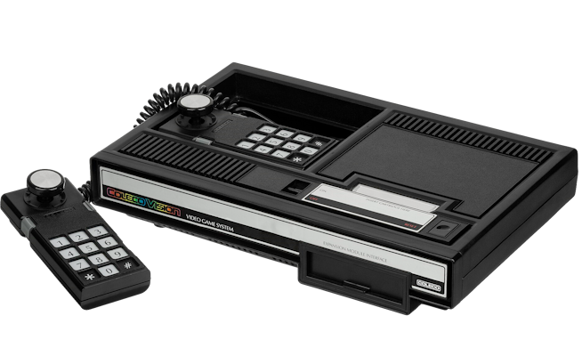

ColecoVision
La ColecoVision fue una videoconsola doméstica de segunda generación
lanzada en 1982 por la empresa Coleco. Compitió directamente contra
la Atari 5200 y la Intellivision, destacando por ofrecer una experiencia
visual y jugable muy cercana a las máquinas arcade de la época.
Su éxito inicial estuvo fuertemente impulsado por incluir el juego
Donkey Kong de Nintendo como título incluido en la caja.
Las ventas superaron el millón de unidades a principios de 1983,
antes de la Crisis del videojuego de 1983 y fue descatalogada
en la primavera de 1984.
Incluso con esas dificultades, vendió más de 6 millones de unidades.
